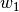
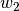
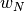
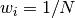

集成方法 的目标是组合若干基础估计器(base estimator由给定的学习算法构建) 的预测来提高只使用单个估计器无法达到的泛化性/鲁棒性。
集成方法通常有两个家族:
在 平均方法(averaging methods)中, 驱动原则是构建若干独立的估计器然后对所有估计器的 输出做平均。从平均意义上来说，组合估计器通常总是比任意单个基础估计器更好，因为组合估计器的输出的方差 被减小了。
例子: Bagging methods, Forests of randomized trees, ...
作为对比, 在推举方法(boosting methods)中, 若干基础估计器被序列化构建并且我们试图减小组合估计器的偏差。主要动机是 通过组合若干弱模型来获得一个强大的集成估计器。
例子: 自适应推举(AdaBoost), 梯度树推举(Gradient Tree Boosting), ...
在集成方法中, bagging 方法形成了一类算法，这些算法在原始训练集的随机子集上构造一种黑盒估计器的若干 实例，然后总体合计这些估计器实例各自的预测结果产生一个最终的预测。这些方法用来减小基础估计器(如决策树) 的预测输出的方差。这通过引入随机性到它的构造过程中然后从这些带有随机性的估计器实例中制造出一个集成方法来实现。 在很多情况下，bagging方法可被视为是一种提高单个模型的预测能力的非常简单的方法，而且无需改动那个单个模型。 由于它们提供了一种减小过拟合的方法， 与那些通常只使用弱模型(比如shallow decision trees)的推举方法(boosting methods)相比，bagging方法配合强而复 杂的模型(例如fully developed decision trees)能够工作的很好。
Bagging方法有很多种，但大多数时候，他们之间的区别在于从训练集中抽取随机子集的方法不同：
在 scikit-learn 中, bagging 方法以统一的 BaggingClassifier meta-estimator的形式提供 (resp. BaggingRegressor), 以用户指定的基础估计器和用于指定抽取随机子集的策略的参数作为输入。 特别的，max_samples 和 max_features 分别控制样本子集和特征子集的大小；而 bootstrap和bootstrap_features控制着样本和特征是否以替换方式被抽取出来。 当使用可用样本的子集时，泛化误差可以通过设置oob_score=True用out-of-bag的样本来估计。 作为一个例子，下面的片段展示了如何以KNeighborsClassifier为基础估计器来 实例化一个bagging集成估计器。构建每一个基础估计器使用了所有样本的50%的子集和所有特征的50%的子集。
>>> from sklearn.ensemble import BaggingClassifier
>>> from sklearn.neighbors import KNeighborsClassifier
>>> bagging = BaggingClassifier(KNeighborsClassifier(),
... max_samples=0.5, max_features=0.5)
参考文献：
| [B1999] | L. Breiman, “Pasting small votes for classification in large databases and on-line”, Machine Learning, 36(1), 85-103, 1999. |
| [B1996] | L. Breiman, “Bagging predictors”, Machine Learning, 24(2), 123-140, 1996. |
| [H1998] | T. Ho, “The random subspace method for constructing decision forests”, Pattern Analysis and Machine Intelligence, 20(8), 832-844, 1998. |
| [LG2012] | G. Louppe and P. Geurts, “Ensembles on Random Patches”, Machine Learning and Knowledge Discovery in Databases, 346-361, 2012. |
scikit-learn的sklearn.ensemble 模块包含两个基于随机决策树的平均算法：
随机森林算法(RandomForest algorithm)和极大树(Extra-Trees method)方法。这两个算法都是特别为树算法设计的
扰动-组合(perturb-and-combine)技术[B1998]。
这意味着在分类器的构造过程中引入的随机性将会产生一组不同分类器的集合。最后，集成分类器的预测是将
各个独立分类器的预测做平均然后输出。
就像其他分类器一样，森林分类器必须要在两个数组上拟合：一个大小为[n_samples, n_features]
的包含训练样本的稀疏或稠密的数组X;以及一个大小为[n_samples]
的包含了目标变量(类标签)的数组Y:
>>> from sklearn.ensemble import RandomForestClassifier
>>> X = [[0, 0], [1, 1]]
>>> Y = [0, 1]
>>> clf = RandomForestClassifier(n_estimators=10)
>>> clf = clf.fit(X, Y)
与 决策树一样, 森林算法也
被扩展用于多输出问题(multi-output problems)
:数组Y的大小为[n_samples, n_outputs]。
在随机森林(RandomForestClassifier类和RandomForestRegressor类)中，
森林中的每个树都是构造于一个样本，该样本以置换方式(replacement--> i.e., a bootstrap sample)从训练集
中抽取。另外，在划分节点构造树的过程中，选择的划分也不再是所有特征上的最好划分。相反的，选择的划分是在
所有特征的一个随机子集上的最好划分。作为此随机性的一个结果，随机森林的偏差相比于那些单个无随机性决策树
的偏差来说稍微有些大；但是，由于最后的平均操作，随机森林的预测方差也会降低(通常足以弥补偏差的增加)，
因此产生了整体上比较好的模型。
与原始的版本[B2001]对比 , scikit-learn 通过平均单个分类器的概率性预测来组合若干单个分类器去实现随机森林，而不是让每个分类器为单个类投票。
在极大随机树(ExtraTreesClassifier类和ExtraTreesRegressor类)中，
在划分(or 分裂 splits)的计算方式上随机性又更进一步。就像在随机森林中那样，极大随机树也使用
候选特征集合的一个随机子集。与寻找最有判别力的阈值的策略不同，在极大随机树中每一个候选特征的阈值
也是随机抽取的。然后，这些随机产生的阈值中的最好的阈值将被用到分裂规则中去。这种策略通常能够
使得模型方差降的更低，但代价是模型的偏差也会稍微增加。
>>> from sklearn.cross_validation import cross_val_score
>>> from sklearn.datasets import make_blobs
>>> from sklearn.ensemble import RandomForestClassifier
>>> from sklearn.ensemble import ExtraTreesClassifier
>>> from sklearn.tree import DecisionTreeClassifier
>>> X, y = make_blobs(n_samples=10000, n_features=10, centers=100,
... random_state=0)
>>> clf = DecisionTreeClassifier(max_depth=None, min_samples_split=1,
... random_state=0)
>>> scores = cross_val_score(clf, X, y)
>>> scores.mean()
0.97...
>>> clf = RandomForestClassifier(n_estimators=10, max_depth=None,
... min_samples_split=1, random_state=0)
>>> scores = cross_val_score(clf, X, y)
>>> scores.mean()
0.999...
>>> clf = ExtraTreesClassifier(n_estimators=10, max_depth=None,
... min_samples_split=1, random_state=0)
>>> scores = cross_val_score(clf, X, y)
>>> scores.mean() > 0.999
True
使用这些方法的时候，需要调节的主要参数有两个：n_estimators和max_features。前一个参数
森林中树的数量。树越多，分类器越好，当然计算代价也越大。另外需要注意的是，当树的数量增加到一定程度，分类性能就再也不增加了。
后一个参数是在树节点上进行分裂时特征的随机子集的大小。这个随机子集越小，输出方差也会越小但同时也会导致偏差增加。
这两个参数的比较好的默认经验值是：对于回归问题max_features=n_features；对于分类问题max_features=sqrt(n_features)。
其中，n_features是数据中特征的总数量。当设置max_depth=None并且min_samples_split=1时，
也就是说当我们允许树完全发展的时候，通常能够获得比较好的结果。但是这样的设置通常不是最优的，而且会消耗大量内存。我们
应该使用交叉验证来获得最佳参数。另外，在随机森林中，默认使用了boostrap样本bootstrap=True；而在极大随机树中，
默认使用整个样本集，即bootstrap=False。当使用bootstrap样本的时候，泛化误差可以在剩下的样本集上估计得到。这可以通过设置
oob_score=True来开启。
最后，ensemble模块支持很多的树的并行构建以及通过n_jobs进行并行预测。如果n_jobs=k，
那么计算将被划分成k个任务然后在计算机的k个核上并行计算。如果n_jobs=-1，
那么计算机中所有的可用核都将被使用。注意到由于inter处理器的通信等，加速可能不会是线性的(也就是不会是k倍的)。
但当我们要构建一大批树或者数据集很大的时候，仍然可以获得显著的加速。
例子:
在一个树中，用作决策节点的特征的相对排名(也就是深度)可以被用于评价那个特征 对于目标变量的预测的相对重要性。在树顶部的那些特征有助于更大的一部分的输入样本的 最终预测决策。因此，这些特征贡献的expected fraction of the samples可被用于 估计特征的相对重要性(relative importance of the features)。
通过平均那些在若干个树上的期望激活率(expected activity rates),我们可以 减小估计器的方差并且用它进行特征选择。
下面的例子展示了使用ExtraTreesClassifier模型进行人脸识别过程中每一个独立的像素的
相对重要性的彩色表示。
在实践中，这些特征重要性的估计结果被存储在拟合好的树模型的属性feature_importances_中。
这是一个大小为(n_features,)的数组，其中的值是正的而且和为1。值越大，代表那个对应特征对预测函数的贡献的重要性越大。
RandomTreesEmbedding
实现了一个对数据的无监督变换操作。使用一个包含若干完全随机树的森林，RandomTreesEmbedding对象使用
一个数据点在树上结束的那些叶节点的索引来编码此数据点。这些叶节点索引随后以one-of-K的方式被编码，
这会产生高维稀疏二值编码。编码操作可以高效的计算出来然后被用做其他学习任务的基础。
编码的长度与稀疏性会受到树的数量以及每棵树的最大深度的影响。 For each tree in the ensemble, the coding
contains one entry of one. The size of the coding is at most
n_estimators * 2
** max_depth
, the maximum number of leaves in the forest.
由于邻居节点会以很大的可能性落入一棵树的同一个叶节点，所以此变换执行了一个隐式的无参数的密度估计过程。
例子:
See also
Manifold learning 技术也可以用于实现特征空间的非线性表达，而且这些方法也聚焦于 维数约简。
sklearn.ensemble 模块包含了著名推举算法：AdaBoost； 由 Freund 和 Schapire 于 1995
[FS1995]提出。
AdaBoost算法的核心原则是在采样权重可重复修改的数据上拟合一个弱学习器序列。此处，弱学习器是指那些仅仅比随机猜测稍微好一点儿 的学习器模型，例如小决策树。使用这些拟合好的弱学习器进行预测的方法是组合弱学习器的加权投票结果来产生最终预测。在每一个 称为推举(boosting)的迭代中，对数据的修改操作是将权重 , , ...,  添加到每一个训练样本上。 初始化的时候，这些权重都被设置为 , 所以在第一步只是在原始数据上简单的训练一个弱分类器。在每一次的后继迭代中，样本权重会被单独修改，然后学习算法会被重新用在这些权重已被修改的数据上进行训练。 在一个给定的迭代步中，那些被上一迭代步的推举模型错误预测的样本会获得更高的权重，而预测正确的样本的权重会下降。随着迭代的持续进行， 那些比较难于预测的样本将会获得推举模型的持续关注。因此，每一个后续添加的弱学习器将会被强制聚焦到那些之前一直被错误预测的样本上。 [HTF].
AdaBoost可被用于分类和回归问题:
- 对于多任务分类问题,
AdaBoostClassifier实现了AdaBoost-SAMME 和 AdaBoost-SAMME.R [ZZRH2009].- 对于回归问题,
AdaBoostRegressor实现了 AdaBoost.R2 [D1997].
下面的例子展示了如何使用100个弱学习器拟合一个AdaBoost分类器：
>>> from sklearn.cross_validation import cross_val_score
>>> from sklearn.datasets import load_iris
>>> from sklearn.ensemble import AdaBoostClassifier
>>> iris = load_iris()
>>> clf = AdaBoostClassifier(n_estimators=100)
>>> scores = cross_val_score(clf, iris.data, iris.target)
>>> scores.mean()
0.9...
弱学习器的个数通过参数n_estimators来控制。参数learning_rate控制着弱学习器在最终的组合预测输出中的高效率。
默认情况下，所有弱学习器都是决策树桩(decision stumps)。 不同的弱学习器可以通过参数base_estimator来指定。
用于获得好结果的可调参数主要是n_estimators以及基础估计器(base estimators)的复杂度。如果基础估计器是是
决策树的话，那么复杂度就要通过树的最大深度max_depth或者每个叶节点需要的最小样本量min_samples_leaf。
例子:
参考文献：
| [FS1995] | Y. Freund, and R. Schapire, “A Decision-Theoretic Generalization of On-Line Learning and an Application to Boosting”, 1997. |
| [ZZRH2009] | J. Zhu, H. Zou, S. Rosset, T. Hastie. “Multi-class AdaBoost”, 2009. |
| [D1997] |
|
| [HTF] | T. Hastie, R. Tibshirani and J. Friedman, “Elements of Statistical Learning Ed. 2”, Springer, 2009. |
Gradient Tree Boosting 或 Gradient Boosted Regression Trees (GBRT) 是推举算法的一个推广模型，可以使用任意的可微损失函数。 GBRT是准确的和有效的现成的程序可被用于回归和分类任务。梯度树推举模型用途广泛包括网络搜索排序和以及生态学。
GBRT的优点是:
- 天然具备处理混合数据(或异构特征)的能力
- 强大的预测能力
- 对输出空间的离群值有很好的鲁棒性(即，鲁棒损失函数)
GBRT的缺点是:
- 可扩展性, 由于推举算法的序列化天性，它很难并行计算。
sklearn.ensemble模块提供了用于回归和分类的GBRT方法。
GradientBoostingClassifier对象支持二分类和多分类问题。
下面的例子演示了怎样拟合一个带有100个决策树桩作为弱学习器的梯度推举分类器。
>>> from sklearn.datasets import make_hastie_10_2
>>> from sklearn.ensemble import GradientBoostingClassifier
>>> X, y = make_hastie_10_2(random_state=0)
>>> X_train, X_test = X[:2000], X[2000:]
>>> y_train, y_test = y[:2000], y[2000:]
>>> clf = GradientBoostingClassifier(n_estimators=100, learning_rate=1.0,
... max_depth=1, random_state=0).fit(X_train, y_train)
>>> clf.score(X_test, y_test)
0.913...
弱学习器(即回归树)的数量由参数n_estimators来控制；每棵树的大小可以通过设置树的最大深度
max_depth或设置叶节点的最大个数max_leaf_nodes来控制。参数learning_rate是一个在范围(0.0,1.0]之间的超参数，使用
shrinkage控制过拟合。
注意
两类以上的分类问题在每次迭代中需要n_classes个回归树的归纳，因此，归纳树的总数量等于n_classes*n_estimators。
如果数据集包含了数量很多的类，那么建议使用RandomForestClassifier作为对GradientBoostingClassifier的替代。
GradientBoostingRegressor支持一系列不同的损失函数
用于回归，可以通过参数loss来指定; 默认的回归损失函数是least squares ('ls').
>>> import numpy as np
>>> from sklearn.metrics import mean_squared_error
>>> from sklearn.datasets import make_friedman1
>>> from sklearn.ensemble import GradientBoostingRegressor
>>> X, y = make_friedman1(n_samples=1200, random_state=0, noise=1.0)
>>> X_train, X_test = X[:200], X[200:]
>>> y_train, y_test = y[:200], y[200:]
>>> est = GradientBoostingRegressor(n_estimators=100, learning_rate=0.1,
... max_depth=1, random_state=0, loss='ls').fit(X_train, y_train)
>>> mean_squared_error(y_test, est.predict(X_test))
5.00...
下图展示了将带有最小均方损失以及500个弱学习器的GradientBoostingRegressor回归器对象应用到
波士顿房价数据集(sklearn.datasets.load_boston)上得到的结果。左边的图展示了迭代过程中的训练和测试误差；
每次迭代产生的训练误差存储在梯度推举模型的train_score_属性中，而每次迭代后的测试误差通过成员方法staged_predict来获得，该函数返回一个产生每阶段预测结果的生成器。
这些训练过程的结果图可以帮助我们确定弱学习器的最优数量n_estimators。右边的图展示了特征重要性，通过feature_importances_属性来获得。
GradientBoostingRegressor 和 GradientBoostingClassifier对象都支持warm_start=True，
它允许你添加更多的弱学习器到一个已经拟合好的模型中。
>>> _ = est.set_params(n_estimators=200, warm_start=True) # set warm_start and new nr of trees
>>> _ = est.fit(X_train, y_train) # fit additional 100 trees to est
>>> mean_squared_error(y_test, est.predict(X_test))
3.84...
回归树基本学习器的大小决定了梯度推举模型能够捕获的变量之间相互影响的水平。一般来说，一颗深度为h的树可以捕获h阶的相互影响。
有两种方法来控制每个独立的回归树的大小。
如果你指定了max_depth=h，那么一个深度为h的完整二叉树就会生长出来。这棵完整二叉树最多会有2**h个叶节点，以及2**h-1个分裂节点。
另一种控制树的大小的方法是通过参数max_leaf_nodes指定叶节点的数量。这种情况下，树的生长使用最好节点优先分裂的搜索策略(best-first search):那些在impurity上有最大提升的节点将会被首先扩展。
一颗拥有最大节点数量为max_leaf_nodes=k的树将会有k-1个分裂节点，因此它可以建模的相互影响的阶数可以达到max_leaf_nodes-1阶。
We found that max_leaf_nodes=k gives comparable results to max_depth=k-1
but is significantly faster to train at the expense of a slightly higher
training error.
The parameter max_leaf_nodes corresponds to the variable J in the
chapter on gradient boosting in [F2001] and is related to the parameter
interaction.depth in R’s gbm package where max_leaf_nodes == interaction.depth + 1 .